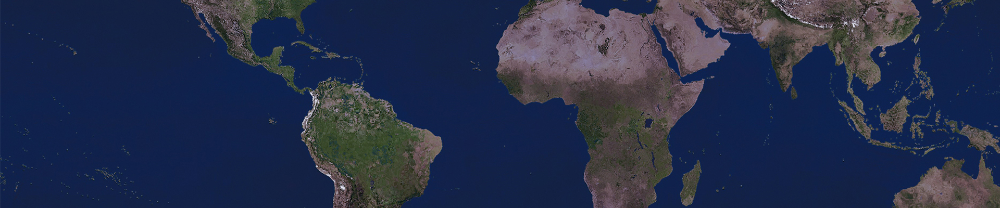

Habitualmente se representa a nuestro planeta como una esfera perfecta, pero esa no es su forma precisa. La Tierra está achatada en los polos, por lo que su forma se asemeja más a una elipse que a una circunferencia. Como sucede en otros planetas, el efecto de la gravitación y de la fuerza centrífuga producida por la rotación sobre su eje genera el aplanamiento polar y el ensanchamiento ecuatorial. Así, el diámetro de la Tierra en el ecuador es unos 43 kilómetros mayor que el diámetro de un polo a otro.
DIAMETRO DE LA TIERRA

Si pudieras entrar a un agujero que llegue al otro lado de la tierra, tardarías alrededor de 40 minutos en llegar, pero antes de llegar a la superficie volverías a caer en dirección contraria y quedarías cayendo de un lado a otro para siempre.
EL OCEANO MAS INMENSO DE NUESTRO PLANETA SE ENCUENTRA BAJO TIERRA
El oceano subterraneo que tiene un volumen tres veces superior al de todos los océanos de nuestro planeta. Ese inmenso océano está, eso sí, a 700 km por debajo de la superficie terrestre.